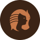
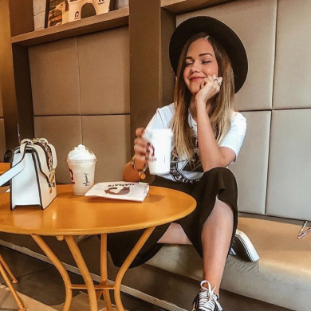
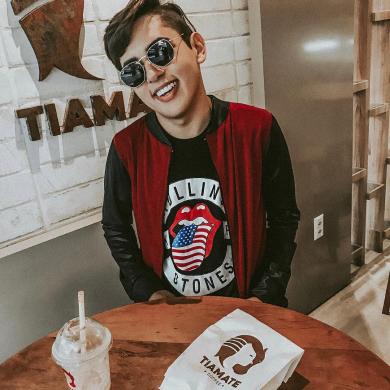
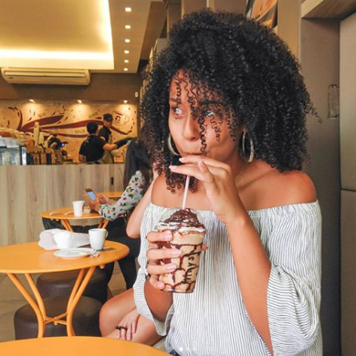
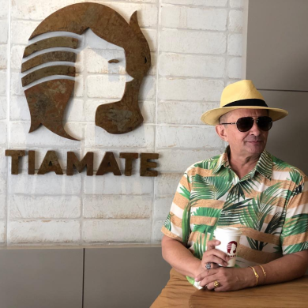
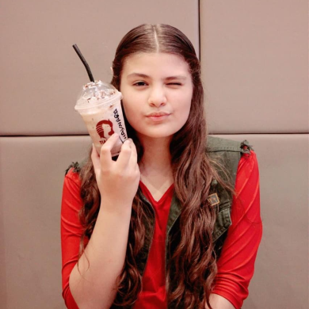
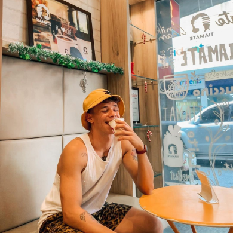

Missão
Fornecer soluções, produtos e serviços de maneira clara e objetiva construindo relacionamentos duradouros com a comunidade, parceiros, colaboradores e sócios, através da criação de valores.
Visão
Ser referência em inovação e estimular exponencialmente a nossa gestão de maneira diversificada, próspera e justa. Com devoção e disciplina em todas as nossas operações de negócio.
Valores
Amor ao Trabalho - Organização - Disciplina - Inovação - Busca Contínua Pela Qualidade - Foco no Cliente
Coisas boas
acontecem àqueles
que gostam de café

Café Autêntico
Chegou nosso café!
Direto da fazenda.
Para você e seus amigos
Ambiente agradável





